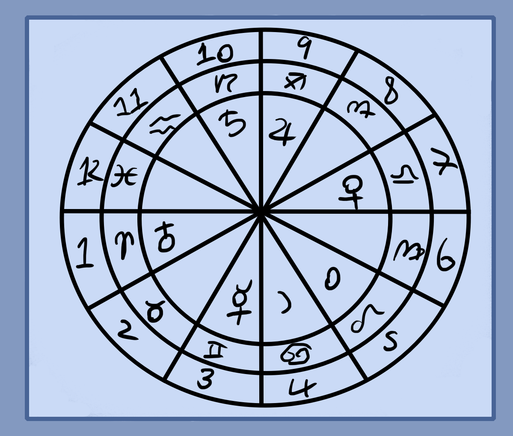

Before learning mental magic it's good to know about influences. Every object, thought, person, planet, lifeform and other either physical or not has an influence on everything else around it. Hence the room you're in is influencing you, and you it. The country, town, groups you're in, family, friends and others are all in a mutual relationship of exchange.
Earth is fixed and heaven is changing. The physical influences change slowly or are usually the same. This means the landscape and area, houses, etc. Weather patterns and astrology are the heavenly influences which change day by day, season by season and year by year. All of these have a slight or large effect on you so start to take notice of everything around you physically, the energetic patterns you go through, the weather and astrology that is local to you.
These influences can effect your magic greatly for better or worse. This should also give some ideas as to why physical objects are used, special times, and other stuff in rituals. Though, don't overthink it as you want to train your mental force to be stronger than these influences.
Reading Astrology
Here is a basic astrology tutorial as its good to learn.
Above is a simple chart. The outer ring represent houses which relate to areas of life. Next ring is signs, They're similar to houses and paint the areas of life with qualities. The last inner ring is where our planets are. These are major qualities and archetypes of humans, life, etc. All three of these are also effected by aspect which modify them depending on the distance and type.
Astrology observes the outer influences coming inward like a lense magnifying light. Each outer influence effects the inner ones as described how the houses effect signs and that effects planets, etc.
On the next page is a list of qualities and basic explanations as to all of these parts.
Houses
1 - Personality and innate qualities.
2 - Wealth and possessions.
3 - Communication and learning.
4 - Home and family, safety, security.
5 - Children, creativity, entertainment, luxuries.
6 - Health, work, illness.
7 - Relationships, marriage.
8 - Death, debt, Inheritance, life force.
9 - Religion, education, travel.
10 - Career, reputation, fame, workplace.
11 - Groups, community, friends, social media.
12 - Occult, unconscious, subconscious, dreams.
House 1 through 12 relates to Aries through to Pisces. So Aries vaguely relates to house 1, Taurus to house 2, etc. Though in a chart they are not linked together. Instead Aries might be in house 4, so that could mean an individualistic homelife or aggressive house. Similarly Cancer could be the ascendant(In the 1st house). That would mean a homely personality, someone who's emotionally caring.
Zodiac Signs
Aries - Fire and Mars. Passion, aggression, isolation, lone wolf, warrior, hot headed.
Taurus - Earth and Venus. Stable, fertile, earthly, wealthy, constructive.
Gemini - Air and Mercury. Communicative, intelligent, well read, good at writing, scientist.
Cancer - Water and Moon. Caring, protective, home body, hoarder, nurturing.
Leo - Fire and Sun. Bright, brilliant, kingly, noble, leader, popular, expressive.
Virgo - Earth and Mercury. Health conscious, cleaner, organized, materially intelligent.
Libra - Air and Venus. Beautiful, balanced, social, artistic, loving, humanitarian.
Scorpio - Water and Mars. Emotional, brooding, secretive, internal.
Sagittarius - Fire and Jupiter. Inspiring, travelers, wise, pious, lucky.
Capricorn - Earth and Saturn. Stable, stern, callous, organized.
Aquarius - Air and Saturn. Aloof, alternative, individualistic, futuristic, technological.
Pisces - Water and Jupiter. Imaginative, mirroring, intuitive, psychic.
7 Planets
Sol/Sun - Radiance, charisma, social power, success, warmth, personality.
Luna/Moon - Sleep, dreams, unconscious, divining, magic, nurturing, what you attract.
Venus - Life giving, art, love, beauty, enjoyment, fun, pleasure, sexuality, sensuality.
Mars - War, craft, anger, violence, energy, aggression, motivation, drive.
Mercury - Intellect, language, numbers, science, logic, communication, speed, trickery.
Jupiter - Luck, growth, expansion, optimism, money.
Saturn - Restriction, law, boundaries, stability, time, debt, slavery, karma.
Here are some basic traits of the planets.
4 Elements
Fire - Heat, passion, spirit, anxiety, pain, will.
Air - Mind, thoughts, words, speed, dexterity, travel.
Water - Emotions, love, healing, dreams, subconscious, divination.
Earth - Money, resources, stability, land, growth.
Aspects
Conjunction 0 - All planets conjunct combine their forces for better or worse.
Trine 30 - Planets support one another.
Sextile 60 - Similar to trine but stronger.
Square 90 - Learning experience and tension.
Opposition 180 - Both planets are against each other.
Post Notes
Make sure to revise over those archetypes and ingrain them into your being. They are very natural and should feel comfortable.
Simply put, archetypes are divisions of a circle. Divide a circle into two parts, you get positive and negative. Two complementary archetypes. The 7 planets, 12 zodiac and 4 elements act similar, equal divisions of a circle.
Don't worry too much about trying to read astrology charts. Though, learning the signs is good practice.
This should now give you a basic idea on the kinds of energy that exist. We can use this to devise magical practice, create relating landscapes like a landscape that fits Aries(deserts, battlefields) or Virgo(Homes, gardens) for example. Similarly when creating imaginary beings, they can fit these archetypes.